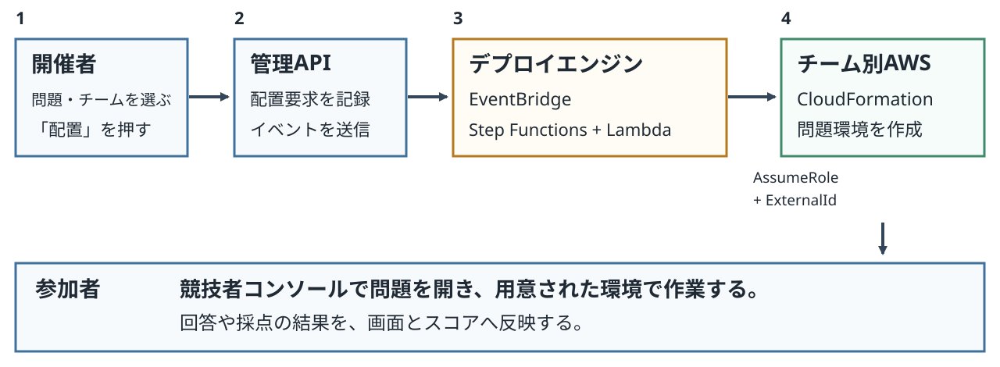
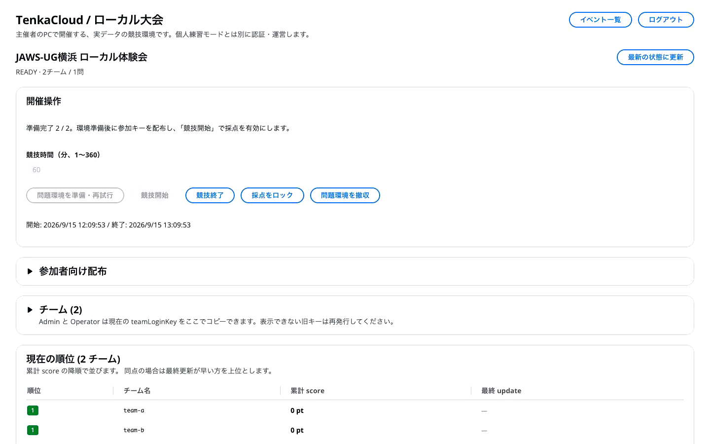
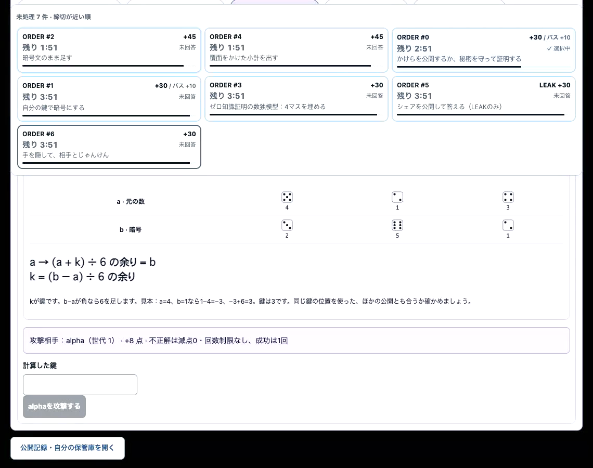

JAWS-UG横浜 #103 × SRE支部 · 2026年9月18日
GameDayみたいなクラウド演習を
自分で作ってみた
GameDayが好きで、いつでも開催したかった。
冨田 進 / susumutomita
合同会社BULL
1/13 · 目安 15秒
冨田です。AWS GameDayが好きで、自分でもいつでも開催したいと思い、TenkaCloudを作りました。作る途中で困ったことと、作り直した構成、実際の動きを紹介します。
きっかけ
GameDay、いつでも開催したくないですか？
僕はGameDayが大好きです。
- 自分で考えたオリジナル問題で遊びたい
- 現場で起きた障害を、再現問題にしたい
- 勉強会でも、社内でも開催したい
2/13 · 目安 30秒
皆さんはAWS GameDayに参加したことがありますか。僕は大好きです。チームで相談して、ログを見て、設定を直して、うまくいったら点数が増える。あの体験をもっとやりたくなりました。
自分の考えたオリジナル問題で遊んだり、仕事で経験した障害を再現したり。それを勉強会や社内で、やりたいときに開催できたらいいなと思いました。
【参考にした過去資料】
https://tenkacloud.com/ccoe-lt/
きっかけ
探してみたけれど、欲しいものがなかった。
見つかったのは、主にCTFのプラットフォーム。
- 問題を出して、回答を採点する仕組みはある
- チームごとのクラウド環境を配る仕組みがほしい
それなら自分で作ろう。→ TenkaCloud
3/13 · 目安 25秒
まず既存のものを探しました。自分でGameDayのようなイベントを開催できるプラットフォームがあれば、それを使いたかったからです。
僕が探した範囲では、見つかったのは主にCTFのプラットフォームでした。問題を出して回答を採点するところは近い。でも、チームごとにクラウドへ環境を作る仕組みまで欲しかった。その用途に合うものを見つけられなかったので、自分でプラットフォームを作ることにしました。それがTenkaCloudです。
【補足・読み上げない】
CTF全体に機能がないと断定する話ではなく、登壇者本人が探したときの経験として話します。
作ってみる
最初は、マルチクラウドを目指した。
特定のクラウドに依存しないよう、OSSを中心に組んでいった。
- Keycloak
- 認証を自分で持つ
- Kubernetes
- アプリを動かす共通基盤を持つ
- Kumo
- 手元でAWS APIを動かす
AWS向けの開発過程で使ったエミュレータ
4/13 · 目安 30秒
せっかく自分で作るなら、AWSだけでなく複数のクラウドに対応したいと考えました。認証にはKeycloak、アプリを動かす土台にはKubernetes。なるべくOSSを中心に組み、特定のクラウドに依存しないようにしていました。
開発を進める中では、手元でAWS APIを動かすKumoも使いました。KumoはAWSのエミュレータで、KeycloakやKubernetesと同じ役割のものではありません。この3つは開発中に使ったものとして紹介しています。
【履歴】
https://github.com/susumutomita/TenkaCloud/issues/12
https://github.com/susumutomita/TenkaCloud/pull/118
https://github.com/susumutomita/TenkaCloud/pull/207
https://github.com/susumutomita/TenkaCloud/pull/378
作っていて気づいた
作ったはいいけど、
これ、運用難しくない？
- 認証基盤を更新する
- クラスタを維持する
- 壊れたときに、自分で直す
イベントを開きたいだけなのに、面倒を見るものが増えていた。
5/13 · 目安 20秒
作っている途中で気づきました。これ、作ったはいいけど、運用が難しくないかと。
認証を自分で持てば、更新も障害対応も自分の仕事です。Kubernetesを持てば、アプリだけでなくクラスタも見ていく必要があります。最初は自由に組めるのが楽しかったんですが、イベントを開催するまでに面倒を見るものが増えていました。
やりたかったのはGameDayのような演習を開くことです。このまま全部を持ち続けるのは大変そうだと考え、方針を変えました。
作り直した構成
SBTを土台に、AWSのサービスで組み直した。
物理構成図を大きく開く ↗SBTの2層に、問題デプロイエンジン・競技者コンソールを追加。
6/13 · 目安 55秒
ここでSaaS版の物理構成図を、まず全体で見せます。SBT、SaaS Builder Toolkit for AWSを土台に作り直しました。
①を押します。Control Planeが利用する組織の登録と管理です。②がApplication Plane、各組織の開催者が使うアプリです。SBTがイベント機能を提供するわけではなく、開催画面はTenkaCloudで作っています。
③を押します。さらに、問題をデプロイするエンジンと、参加者が使う競技者コンソールを追加しました。認証はCognito、処理はLambda、保存はDynamoDBへ寄せています。【補足・読み上げない】
実装上はpooled / siloなどが分かれ、スタック数は3ではありません。
全体で位置関係を示してから、必要な部分だけ拡大します。全サービス名の説明はしません。
【原本・根拠】
https://github.com/susumutomita/TenkaCloud/blob/main/docs/architecture/diagrams/system-architecture.drawio
https://github.com/awslabs/sbt-aws
仕組みを見る
「配置」を押すと、チームのAWSに環境ができる。

図を拡大する ↗クラウド環境を使う問題の配置経路です。暗号バトルは、共有の競技APIで状態と得点を更新するタイプの問題です。
7/13 · 目安 45秒
例えば、AWSの設定を直す問題を開くときです。開催者が問題とチームを選んで配置を押すと、APIが受け付け、EventBridgeにイベントを送ります。Step FunctionsとLambdaが配置を進め、チームのAWSアカウントにAssumeRoleして、CloudFormationで問題環境を作ります。終了後の削除も、この問題環境を単位に扱います。
参加者は競技者コンソールから問題を開き、用意された環境で作業します。正解かどうかはサーバー側で判定します。
すべての問題がチームごとのAWS環境を必要とするわけではありません。最後に見せる暗号バトルは、共有の競技APIに操作を送り、状態と得点を更新する問題です。
【出典】
https://tenkacloud.com/docs/concepts/architecture/
https://github.com/susumutomita/TenkaCloud/blob/main/infrastructure/lib/problem-deploy-backend-stack.ts
開催する問題
Challengeで解く。Battleで競う。
- Challenge
- 問題を解き、回答やflagを提出する。
例：設定ミスの修正、脆弱性の調査 - Battle
- 稼働状態や競技中の操作を判定し、得点を競う。
例：サービスの復旧、攻撃・防御、暗号バトル
同じ開催画面から、問題に合った採点方法を使う。
8/13 · 目安 40秒
問題にはChallengeとBattleがあります。Challengeは問題を解いて回答を提出する形式。Battleはサービスを維持したり、競技中の操作で得点が動く形式です。別々の開催基盤を作ったのではなく、問題と採点方法を変えて同じ基盤で開けるようにしています。暗号バトルもBattleの一例です。
【補足・読み上げない】
Battleがすべて毎分採点という意味ではありません。Challengeにもイベントの制限時間があります。
【実装】
https://github.com/susumutomita/TenkaCloud/blob/main/apps/participant-portal/src/lib/category.ts
もう一つ困ったこと
開催していない間の、データベース代。
- DynamoDBをプロビジョンド容量にアクセス増による料金の急増を避けたかった。
- 使っていなくても、確保した容量の費用が残るイベントを開かない日もある。
- SQLite / Tursoも選べるようにしたローカルはSQLite。AWS上の処理からはTursoへ。
Turso対応は実装・テスト済み。実AWS＋Tursoでの開催と請求確認は未実施。SaaSのSBT用DynamoDBまでなくなるわけではありません。
9/13 · 目安 45秒
コストでも困りました。DynamoDBは、アクセスが増えたときの料金が怖くて、オンデマンドではなく確保する容量を決めるプロビジョンドにしていました。でも、それだと開催していない間も容量分の費用が残ります。
そこで、手元ではSQLiteを使い、AWSのLambdaからはTursoを使えるようにしました。データの保存先を選べる実装です。Tursoについては実装とテストまでで、実際の開催や請求確認はまだ残っています。
【補足・読み上げない】
プロビジョンド容量はAWS全体の請求上限ではありません。低容量を超えればスロットリングも起きるため、イベントに合わせた容量設定が必要です。Liteの制御データ用DynamoDBを生成しない構成と、SBT用テーブルが残るSaaS構成を区別します。
【実装・検証範囲】
https://github.com/susumutomita/TenkaCloud/blob/main/docs/running-costs.md
https://github.com/susumutomita/TenkaCloud/blob/main/docs/local-play.md
開催を楽にする工夫
問題を置いた後の、運営機能も作った。
- ゲート・障害注入
- 前の問題を通過したら次を解放。問題に用意した障害を発火。
- ダッシュボード
- チームの得点と、問題の配置状況を追う。
- ログインキー
- イベント作成時に、チームごとのキーを自動発行。
- AWSフェデレーション
- 参加者画面 → 一時的な権限 → チームのAWSコンソール。
10/13 · 目安 40秒
開催者向けの工夫も入れました。最初の問題を通ったら次を開けるゲート、問題側が用意した障害を入れる操作、得点や配置状況を見るダッシュボードです。
イベントを作るとチームごとのログインキーを自動発行します。AWSの問題なら、参加者画面から一時的な権限でAWSコンソールを開けます。ここから開催の流れを見せます。
【補足・読み上げない】
ゲートはfeature flagが既定OFFです。障害注入は問題定義内の操作に限定します。AWSコンソールはチームキーと配置の照合後に2段階のAssumeRoleを行い、signin tokenを取得します。任意のAWSアカウントへ自由に入れる機能ではありません。
【実装】
https://github.com/susumutomita/TenkaCloud/blob/main/apps/application-admin-console/src/components/event-detail/EventProgressionGatePanel.tsx
https://github.com/susumutomita/TenkaCloud/blob/main/infrastructure/lib/problem-deploy/handlers/event-handler/disruption-fire.ts
https://github.com/susumutomita/TenkaCloud/blob/main/infrastructure/lib/problem-deploy/handlers/event-handler/create.ts
https://github.com/susumutomita/TenkaCloud/blob/main/infrastructure/lib/problem-deploy/handlers/participant-handler/sso.ts
使ってみる · 開催者
イベントを作って、始める。

開発中のローカル開催 · Bun / SQLite / 実Docker · 約41秒
イベントを作る問題とチームを登録。
環境を準備するチームごとに
Dockerを起動。
競技を始める参加者がログインし、
問題を開く。
開発中のPR #3234を使用。AWSへの配置・フェデレーションはこの動画に含みません。キー入力と待ち時間は省略しています。
11/13 · 目安 50秒
開催する流れをお見せします。これは開発中のローカル開催です。イベントに問題とチームを登録し、各チームのDocker環境を準備します。準備ができたら競技を開始。参加者は配布されたキーで入り、問題を開きます。保存先はSQLiteで、画面もコンテナも実際に動かしています。次に、別に作ったオリジナル問題の暗号バトルを紹介します。
【確認範囲】
PR #3234のf1b2faafで実行。初回対応のsqli-demoを使用。AWS開催と暗号バトル専用ハーネスは別経路です。
https://github.com/susumutomita/TenkaCloud/pull/3234
使ってみる · オリジナル問題の例
暗号バトル：相手にヒントを渡して、点を取る？

実際のゲームロジックを動かしたローカル実演 · 字幕付き
まず、自分で解く回答が合えば得点。
公開して、楽をする得点できるけれど、
相手にも材料が見える。
相手の秘密を探す公開情報を読んで
HUNTする。
ローカルで時計を進め、2チームの席を切り替えています。AWSでの開催・認証・永続化は含みません。
12/13 · 目安 90秒
最後に、自分で作ったオリジナル問題の例として、暗号バトルをお見せします。約74秒の動画です。
最初は自分で計算して回答し、30点を取ります。次のお題は「公開して答える」を選びます。計算を省いて10点を取れますが、元の数と暗号文の組が公開されます。
相手の席に切り替えてみます。公開された1と5の対応から、鍵は4だとわかります。その鍵をHUNTに入力すると、8点を取り、相手は12点減ります。
こんなふうに、自分で考えた問題を載せて遊べるようにしました。この問題も、TenkaCloudの問題集で公開しています。
【補足・読み上げない】
動画は本物のゲームロジックと参加者UIを使っていますが、ローカル環境です。開発用の時計を1分進め、alphaからbravoへ席を切り替えています。AWSの認証・永続化・公式スコアを示す動画ではありません。
【出典】
https://github.com/susumutomita/TenkaCloudChallenge/tree/main/battles/ac26-crypto-battle
https://tenkacloud.com/acp2026/
作っているメンバー
GameDayが好きなメンバーで、作っています。
13/13 · 目安 15秒
TenkaCloudは、amedamaこと冨田、チャーリー、きせのんのメンバーで作っています。コードも問題もOSSです。QRコードからリポジトリを見てみてください。ありがとうございました。
【補足・読み上げない】
メンバー表記とQRコードは既存のCCoE発表資料に基づきます。
【参考】
https://tenkacloud.com/ccoe-lt/
https://github.com/susumutomita/TenkaCloud
https://github.com/susumutomita/TenkaCloudChallenge